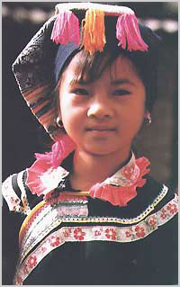
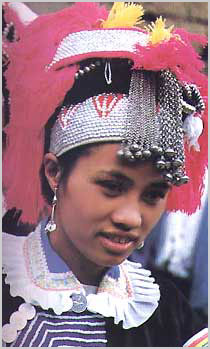

回望近二十年来的少数民族音乐发展，令人鼓舞和振奋。少数民族的音乐包括着很多的门类，对这些不同的门类都去进行一一地综述确实是很难的事。由于创作是少数民族音乐事业的先导，创作在少数民族音乐事业的发展中起着极其重要的作用，所以在这里就以少数民族的音乐创作做为切入点，对新时期的少数民族音乐发展做一简略地回顾。


一
唱响社会主义文化的主旋律，坚持为人民服务，为社会主义服务，实行“百花齐放，百家争鸣”，是我们党的重要文艺方针。我们广大的文艺工作者总是把以优秀的作品鼓舞人作为自己的社会职责，把它放在创作的首位，努力创作出体现时代精神，具有民族特色，思想性和艺术性完美统一的音乐作品。
80年代初创作并流传的群众性合唱歌曲《五十六个民族，五十六朵花》（高守信词，俞礼纯曲），非常形象地把党比做“阳光”和“雨露”，把五十六个民族比做 “鲜花”，五十六朵“鲜花”在党的“阳光”照耀和“雨露”滋润下并蒂盛开。生动地体现出五十六个民族相互依存、密不可分的血肉关系，表达出了我国各民族人民对党具有的深厚感情和无比热爱，受到了广大人民群众的喜爱和欢迎。
90年代初创作并流传的歌曲《爱我中华》（乔羽词，徐沛东曲），是为在广西举行的第四届全国少数民族运动会开幕式大型文艺表演而创作的主题曲，音乐采用壮族民间音调并进行了发展。歌中唱道：“五十六个民族，五十六枝花，五十六个民族兄弟姐妹是一家，五十六族语言汇成一句话：爱我中华！”。歌曲在把五十六个民族比做“鲜花”的基础上，又把五十六个民族比做“兄弟姐妹”，并且唤发出了五十六个民族的共同心声“爱我中华！”。朴实的语言，简洁的音调，深刻地反映出我国各民族的亲密团结和爱国爱家的深厚情感，极大地激发了我国各民族人民的爱国热情，所以很快得到了广大人民群众的喜爱和盛传。
《美丽的心灵》（陈雪帆词，金凤浩曲）创作和流行于80年代初，这是一首朝鲜族风格的创作歌曲，它以优美、轻盈的曲调歌唱了城市清洁女工的辛勤劳动和美丽心灵。当时正处于大力提倡和开展“五讲四美”，人们呼唤“心灵美”的年代，所以歌曲很快在广大人民群众中产生了极大的共鸣，获得了人民群众的广泛欢迎和喜爱。
扎根于广大人民中间，反映广大人民群众心声的作品，往往就会反应着一个时代的精神或代表着一个时代。其作品也就一定会有着强烈的时代感，具有强大的生命力。这样的少数民族音乐作品很多，以上提到的只能算是一个代表。
二
我国的少数民族大都生活在祖国的边疆，一方水土养育着一方人。不同的民族有着自己的风土人情，然而有一点却是共同的，那就是对祖国、对家乡、对生活的无比热爱。在少数民族的音乐创作中，这类作品占有较大的比重。
在声乐作品方面，蒙古族风格的创作歌曲 《美丽的草原我的家》（火华词，阿拉腾奥勒曲），以优美的牧歌风曲调赞颂了内蒙古草原美丽如画的风光和牧民们的幸福生活。旋律优美动人，富有很强的艺术感染力，深受人们的喜爱。《骏马奔驰保边疆》是蒋大为作词、作曲并演唱的一首独唱歌曲，旋律采用蒙古族音调，简洁上口，表现了边疆人民热爱边疆和保卫边疆的心情和决心，得到了广大听众的喜爱。
新疆维吾尔族风格的创作歌曲《吐鲁蕃的葡萄熟了》（瞿琮词，施光南曲），运用明喻与陪衬的手法，巧妙地把对祖国、对生活的爱和对情人的爱融合在一起，巧妙而富有情趣。这首独唱曲经满族女中音歌唱家演唱后，很快受到群众的欢迎。
广西彝族风格的创作歌曲《赶墟回来啊哩哩》（古笛词，黄有异曲），表现出彝家姑娘的美丽活泼，热爱生活，在赶墟回来时的愉快心境。此歌曲不仅作为独唱歌曲受到人们的喜爱，还由孙宝林编配为合唱而得到更为广泛的演唱和欢迎。
合唱组曲《云南风情》（张东辉词，田丰曲），作品由《洱海姑娘》（白族）、赶摆路上（傣族）、摩梭葬礼（纳西族）、舂米谣（景颇族）、《火把节之夜》（彝族）五个部分组成。组曲反映了云南的少数民族民俗风情，音乐素材也来源于民间，但在旋律、和声、配器等方面运用了现代的思维和技法，使其风格得到了进一步的丰富和发展，受到人们的喜爱并获得专家们的好评。
藏族风格的创作歌曲《青藏高原》（张千一词曲），旋律深情而高亢，表现了对青藏高原的无限神往和极力赞颂。特别是歌手李娜的演唱，把通俗的演唱风格与藏族的民间演唱风格结合在一起，给人以耳目一新的感觉，再加上富有激情和感染力的演唱，更是深深地打动了听众，使这首作品家喻户晓。
在器乐曲方面，新疆的青年作曲家努斯勒提·瓦吉丁作曲的管弦乐《故乡》，歌颂了维吾尔族人民的勤劳、勇敢，智慧和豪放，描述了他们今天的幸福生活和对美好未来的无限憧憬。弹拨尔独奏《祖国是家园》（艾伯都拉吐尔地、周吉曲），表现了新疆少数民族生活在祖国大家园中的无比愉快与欢乐。
大三弦独奏曲《边寨之夜》（费坚蓉曲），表现了西南边陲少数民族青年在节日之夜载歌载舞的欢乐情景，反映了边寨人民的幸福生活和民族风情。
民乐合奏曲《达勃河随想曲》（何训田曲），表现了生活在达勃河两岸的达勃人（亦称“白马藏族”）的豪放、热情、乐观的性格和多采的生活情景。
朱践耳作曲的交响音画《黔岭素描》和《纳西一奇》，分别以贵州的苗族、侗族和云南的纳西族音乐作为素材，描绘了少数民族的风土人情和精神风貌。运用了一些现代技法，音乐风格新颖。
马头琴曲《万马奔腾》（齐·宝力高曲），乐曲具有浓郁的蒙古族风格，气氛热烈，表现了“马背民族”的豪放性格和拚博向上的精神，体现出强烈的民族个性，富有极强的艺术感染力，深受蒙古族人民和广大人民群众的欢迎和喜爱。近日，因千人在同一时刻用马头琴演奏《万马奔腾》而创下吉尼斯世界纪录。
我国少数民族的生活是多姿多彩的，多姿多彩的生活也就带来了有着丰富题材和众多表演形式的音乐作品。因篇幅作限，更多的作品就不在这里一一举出。
三
在少数民族音乐的发展道路上，如何做到古为今用，洋为中用，在继承民族传统艺术的同时，又不拘泥于传统，大胆创新，即有浓郁的民族特色，又符合现代的审美意识和潮流，专业音乐工作者对此进行了一些有益的探索并取得一定成绩。
在全国第四届音乐作品评奖中获得一等奖的作品中，朝鲜族青年作曲家权吉浩的钢琴独奏曲《长短的组合》，将朝鲜族民间音乐中特有的节奏形态作了充分的发挥，使作品充满了活力。陈怡的钢琴曲《多耶》，运用了自由十二音和中国“十番锣鼓”的节奏组合方式，将广西侗族民歌与京剧音调片断揉合在一起，表达了作者置身于一个热闹的民间歌舞场面的感受。 在全国第三届音乐作品评奖中获得一等奖的作品《观花山壁画有感》（徐纪星曲）， 乐曲采用马骨胡、钢琴与六件打击乐器，笔法粗犷有力，庄重古扑，生动地反映了古代壮族人民的社会生活和文化生活。
在流行乐坛，少数民族的音乐和题材仍然得到广泛的运用，并受到了广大观众，特别是青年人的喜爱。如蒙古族歌手腾格尔演唱并作曲的歌曲《蒙古人》、《天堂》 ，藏族歌手韩红演唱的歌曲《香格里拉》，蒙古族歌手斯琴格日勒演唱的歌曲《山歌好比清江水》 ，还有由彝族歌手组成的“彝人制造”演唱等，都得到了广泛的好评。
作曲家何训田与歌手朱哲琴合作推出的《阿姐鼓》和《央金玛》CD，在以西藏的文化和音乐作为背景的同时，与世界音乐流行的潮流相结合，再加上精细的音乐制作，不仅在国内引起了极大的反响，在国际市场上也有了良好的开端。此后，又先后出现了瑶族音乐专辑《盘王之女》CD、云南各少数民族音乐专辑《云之南》 CD等，都获得了好评。
四
我国的各少数民族，不论是生活在祖国的东南西北，也不论是生活在山川、草原或河岸，都是勤劳勇敢、能歌善舞的民族，他们生活的地方甚至还有着“歌舞之乡” 的美称。少数民族的文化生活往往是歌、舞、乐三位一体，表演形式多种多样，极为丰富。所以在少数民族的音乐创作中，舞蹈音乐、舞剧音乐、歌剧音乐、歌舞音乐等仍然有着一定的地位。
改革开放以来，少数民族题材的舞蹈音乐、舞剧音乐、歌剧音乐、歌舞音乐等的创作和演出，数量更为增加，题材和风格更为广泛，而且质量在不断提高，受到了观众的欢迎和专家的好评。由于数量甚多，所以这里只能简言提及一小部分剧（节）目，如彝族的歌剧《火把节》，维吾尔族的歌剧《艾里甫——赛乃姆》、《第一百个新娘》，达斡尔族的歌剧《傲蕾·一兰》，蒙族的歌剧《舍楞将军》、《沧原》， 藏族的舞剧《文成公主》、《卓瓦桑姆》、《智美更登》，彝族的舞剧《阿诗玛》，壮族的舞剧《妈勒访天边》，满族的舞剧《珍珠湖》，土家族的舞剧《土里巴人》，回族的歌舞剧《曼苏儿》，傣族的舞蹈诗《泼水节》，朝鲜族的舞蹈诗《长白情》，大型西藏乐舞《珠穆朗玛》以及大型歌舞《我们新疆好地方》、《塞上春潮》等。